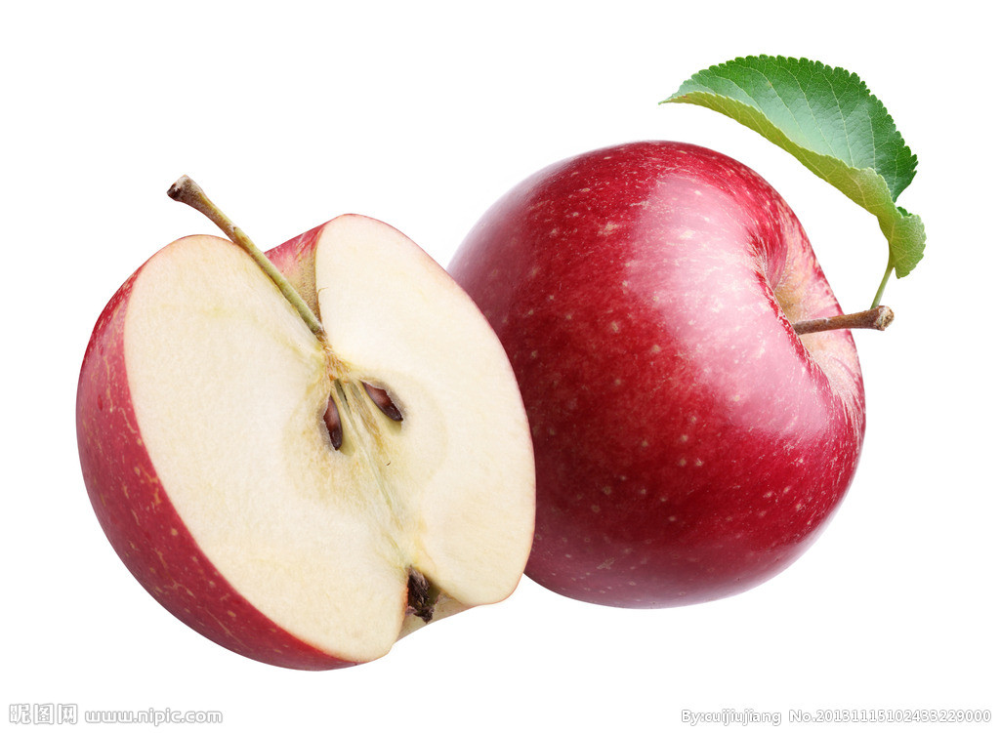
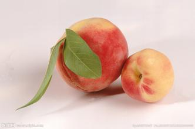
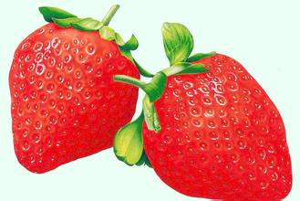
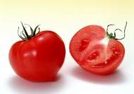

搜 索
登录
注册
首页
菜谱大全
店家分享
厨房百科
饮食健康
讨论区
首页
厨房百科
厨房食材百科
水果类
海鲜类
维生素
蔬菜类
五谷
禽类
饮品
海棠果
海棠果，海棠树的果实，果皮色泽鲜红夺目，果肉黄白色，果香馥郁，鲜食酸甜香脆
菠萝
菠萝，福建和台湾地区称之为旺梨或者旺来，新马一带称为黄梨，大陆及香港称作菠萝，岭南四大名果之一。

苹果
苹果是一种低热量食物，每100克只产生60千卡热量。苹果中营养成份可溶性大，易被人体吸收，使皮肤润滑柔嫩
橙子
橙子是一种柑果，是柚子（Citrus maxima）与橘子的杂交品种。有很高的食用，药用价值。
葡萄
葡萄为葡萄科葡萄属木质藤本植物，小枝圆柱形，有纵棱纹，无毛或被稀疏柔毛，果实球形或椭圆形。

桃
早春开花；近球形核果，表面有毛茸，肉质可食，为橙黄色泛红色，有带深麻点和沟纹的核，内含白色种子。

草莓
原产南美，中国各地及欧洲等地广为栽培。草莓营养价值高，含有多种营养物质 ，且有保健功效

西红柿
原产南美洲，中国南北方广泛栽培。番茄的果实营养丰富，具特殊风味。可以生食、煮食、加工番茄酱、汁或整果罐藏。
上一页
1
2
3
4
5
下一页
友情链接
美食
甜点
厨房必备
主食
商家参考
天天美食
123菜谱大全
爱奇艺
音乐
图吧
饮食健康
搜狐论坛
赶集网
美食网
餐饮
杂志网
厨师网
好豆菜谱
关于我们 | 联系我们 | 最新动态 | 网站地图